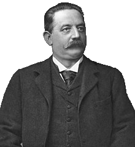

First discovered by J.Bertram in Backhousia Citriodora oil. He discovered from many of the oil content of Backhousia there is a constituent of lemon that is named citral. This greater amount is contained in the oil of lemon-grass and oil backhousia. Also present in citronella oil in Java, ginger oil, kobushi oil, sassafras leaf oil, Japanese cinnamon oil, fruit oil, bark and leaves respectively from Tetranthera citrata, German rose oil, leaf oil and sweet twigs. lemon and lime trees. Of all the oils mentioned above, citral can be isolated by using additional crystal products with bisulphite. Of these compounds, after the prior purification of the washing with alcohol and ether, the citral can be obtained in pure state by decomposition with alkali carbonate.


Then, Ferdinand Tiemann resumed further research on citral. He concluded that citral is a thin, light yellow liquid, which is optically inactive and which possesses a penetrating odor of lemon. Under atmospheric pressure it distils at 228 to 229° with slight decomposition. And then,in the laboratory of Schimmel and Co. done purification of citral with the bisulfite or the hydrosulfuric acid addition products.